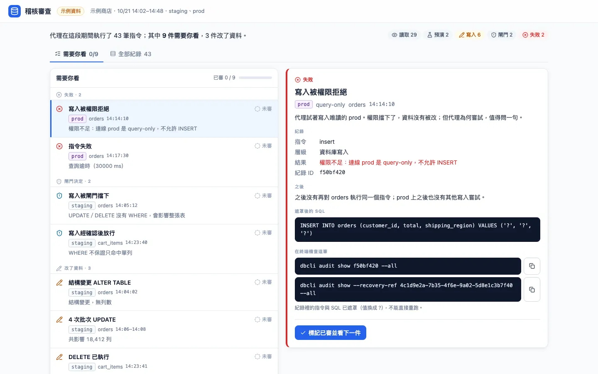
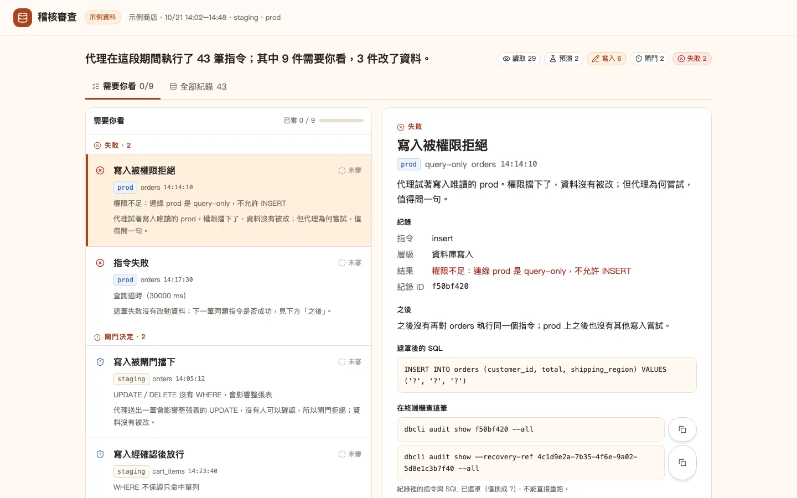
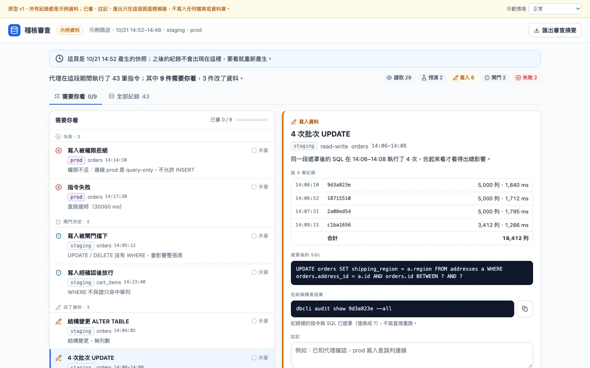
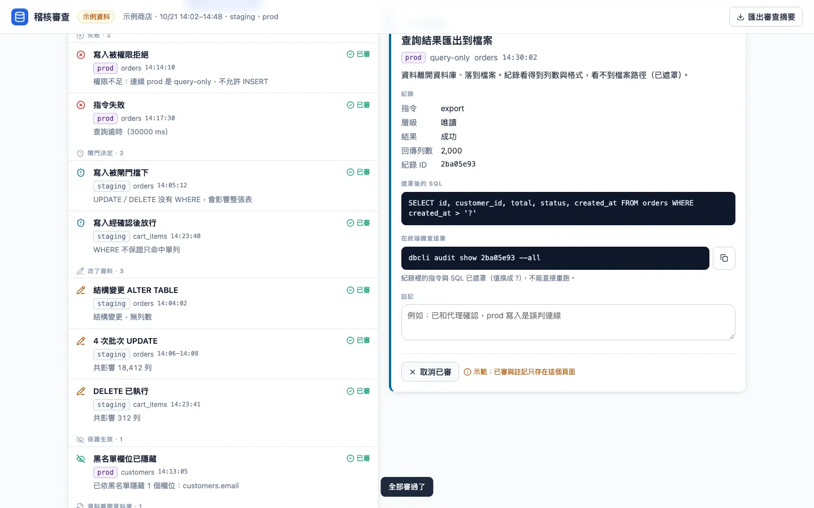
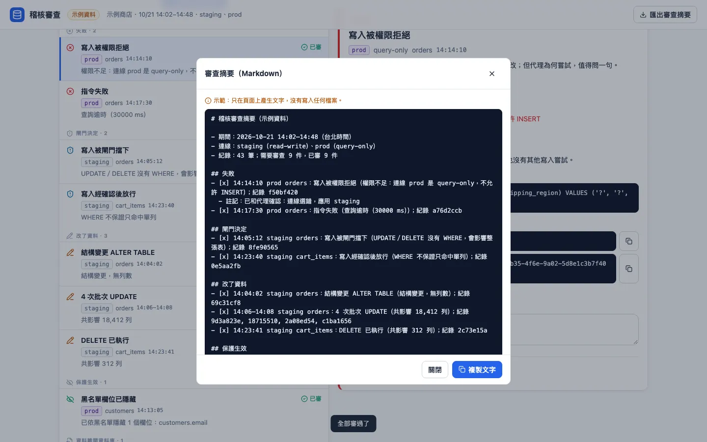
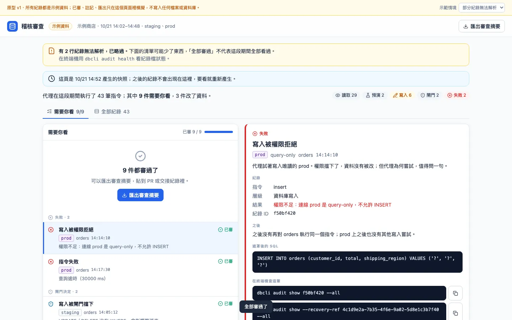
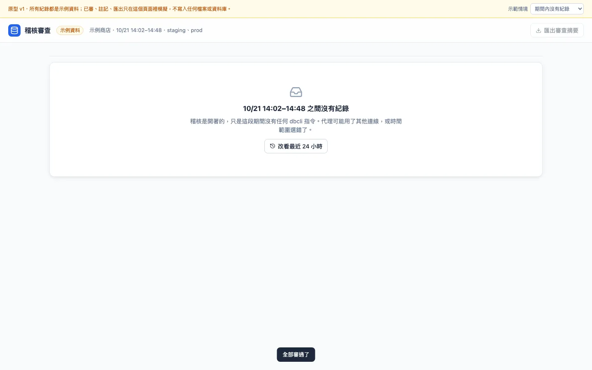
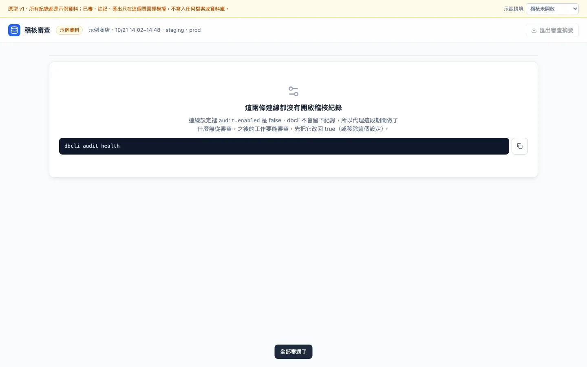
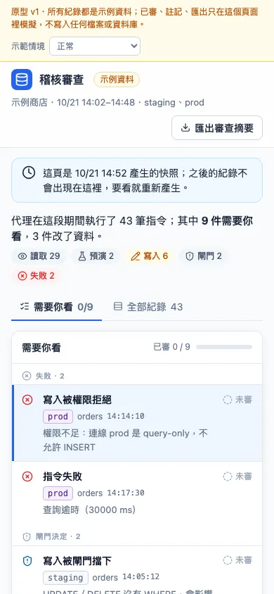
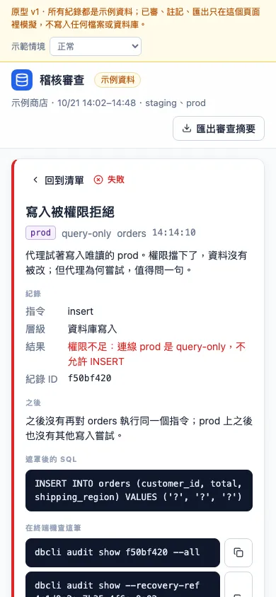

已經有介面，所以是功能起手
這個專案已有介面，請先理解它，找出一項還沒有介面的能力與主要使用流程，提出幾個方向並建立比較原型。
技能從 origin/main 的 commit 11b0f7b 匯出一份乾淨副本來讀，沒有動本機 clone。dbcli 本身是 CLI，但已經有兩個介面與視覺來源：query --ui 產生的 HTML 報表模板，以及使用情境指南網站的 dbcli-guides.css。這次要設計的是兩者都沒涵蓋的新能力，使用者也沒有抱怨既有畫面，所以是功能起手，不是改善。
技能把指令整理成八項使用者任務，大多數輸出是給代理讀的 JSON 或文字。只有一項的讀者是人，卻只有終端機表格：事後審查代理做了什麼。
為什麼挑稽核紀錄審查
這一輪原型要回答的問題：操作者能不能在三分鐘內，從 43 筆紀錄裡找出所有實際改動資料與被擋下的操作，說出 prod 那筆失敗是什麼、要不要追？
沒選的候選：黑名單設定的規則本身很短，CLI 就夠；證據包的使用者還很少，先做介面風險高。
讀者是人
稽核紀錄的價值只在人回頭讀它時才兌現。ADR-0016 要紀錄能回答「這條連線被讀了什麼」；原始碼的註解也說，一個得靠人手寫 jq 才拿得到的量測，六個月後不會有人去做。
資料契約已經完整
AuditEntry有時間、連線、指令、副作用等級、對象、成敗、遮罩後的 SQL；閘門決定寫在 metadata，audit health有啟用狀態。介面不需要發明能力就能做出主要流程。終端機不適合
一段代理工作常有幾十筆指令。
audit tail一次只看一條連線的最後幾筆，寫入與閘門決定夾在大量讀取之間。
同一批 43 筆，三個結構
三個方向用同一套中性樣式、同一批 43 筆示例紀錄、同一個任務，差在入口與資訊層級。
| 方向 | 適合 | 代價 |
|---|---|---|
| A 時間軸重播 | 想知道代理怎麼一步步做到這裡 | 9 件要看的事混在讀取之間，要靠篩選；最接近 audit tail |
| B 待審清單 | 發 PR 或交接前，幾分鐘內確認沒有意外的寫入 | 「哪些算需要看」是新的產品規則；已審狀態沒有地方存 |
| C 影響地圖 | 回答「這次動到了哪些表」 | 失去時間順序，看不出閘門拒絕後代理改了什麼做法 |
技能建議 B：這份工作是從大量讀取裡找出少數該追的事，B 一打開就給出這 9 件，並把 4 次同 SQL 的批次 UPDATE 合成一件，算出共 18,412 列。
B。


兩個視覺來源互相矛盾
報表是冷色的石板灰加藍，指南是暖色紙面加橘，而且兩者都只是單一介面的樣式，不是品牌規範或設計系統。所以視覺沒有被既有來源定下來，但也不該發明新品牌：兩個處理各取自一個既有來源。
| 處理 | 取自 | 決定了什麼 |
|---|---|---|
| 1 報表同源 | 報表模板的 Tailwind 設定與 .card、.btn-primary | 14px 基準、白卡片、詳情卡左緣色條標類型、深色 SQL 區塊；藍色只給主要動作 |
| 2 指南紙本 | dbcli-guides.css 的變數與膠囊按鈕 | 奶油色紙面、墨色粗標題，每件多寫一句「為什麼列在這裡」，一屏約 4 件 |
技能建議 1：這個畫面會走和報表同一條管線，共用元件，使用者一看就知道是 dbcli 產生的；2 讀起來舒服，但這個任務要一眼看完 9 件。
1。




深化成可以試用的原型
結構 B 加處理 1。試用任務是：找出代理在 prod 上被拒絕的那筆操作，說明原因，確認之後有沒有改走別的寫入路徑，加一句註記；再把 9 件都標成已審，匯出審查摘要。
已審、註記與匯出都只在頁面記憶體裡模擬，頁頂的黃色列寫明這一點。「在終端機查這筆」複製的是現有指令 dbcli audit show <id> --all。
使用者還沒有試用，也沒有說定稿；SESSION 停在交接，正式實作沒有授權。















驗證到哪裡
2026-10-22 用 Playwright 1.64.1 與 Chromium（headless）完成，下面摘自 SESSION 的驗證段落。
做過的檢查
- 32 張截圖逐張看過，修了七處，例如示例 ID 每 8 筆重複造成兩件同時選取、C 的導言說錯了寫入範圍、點選後焦點掉到 body。
- 程式化操作：A 去掉讀取與預演後剩 12 列；定稿有 9 件待審、批次合計 18,412 列；連按 9 次「標記已審並看下一件」後顯示 9／9；註記出現在匯出的 Markdown 裡。
- 鍵盤：聚焦第一件後按兩次向下鍵再按 Enter，選到「寫入被閘門擋下」，焦點環是 2px 藍色實線。
- 每個頁面、每個情境在 1440 與 390 都沒有頁面層級的橫向捲動。
沒有做的檢查
- 真人試用，所以「三分鐘內找出」的問題還沒有答案。
- 螢幕報讀器與鍵盤以外的輔助技術；Safari 與 Firefox。
- 複製到剪貼簿只在 headless Chromium 確認沒有錯誤，沒有確認真的貼得出來。
- 沒有用 dbcli 實際產生的稽核檔驗證欄位。
交接時還沒決定的事
dbcli 要不要有這個介面、指令叫什麼；「需要你看」的分類規則，尤其 export 與黑名單提示算不算；已審與註記存在哪裡；一段代理工作用時間範圍還是 DBCLI_SESSION_ID 來框。這些都要專案擁有者決定，設計被接受也不等於授權變更範圍。
打開原型
單檔離線 HTML，原樣複製自試跑產物，不連 CDN。所有動作只在頁面記憶體裡模擬。